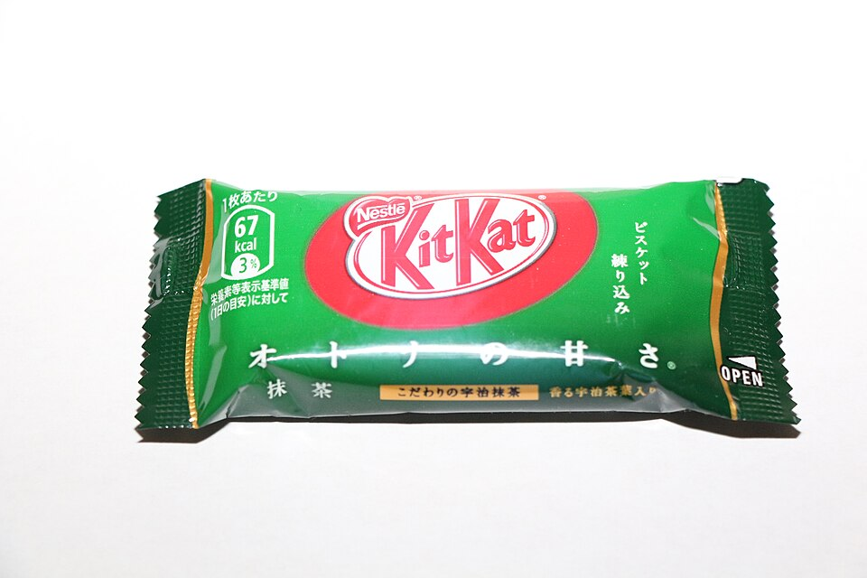

History of KitKats in Japan!
Kit Kats were introduced to Japan in 1973 when British confectioner Rowntree's made an agreement with Japanese confectioner and restaurant owner Fujiya. In 2014, they were the top-selling confection in the country. The Kit Kat brand took the number one sales position from Meiji chocolate in 2012, though Meiji remains the leading confection company in Japan overall.
In 2004, the green tea flavor was introduced. Since then, the product has been sold in more than 300 seasonal and regional flavors.The top-selling flavor of the candy bar in 2010 was soy sauce. Nestlé attributes the success of the flavor varieties to the tradition of omiyage, in which regional specialties are brought back for family and co-workers from trips away. The company believes the limited-edition seasonal models create a "scarcity and rarity of value" for customers.

Timeline

How it Functions
The business model was created to solve a problem the company found in Japanese convenience stores, which frequently rotated items and flavors off of shelves. By producing smaller runs of flavors, the company was better able to control its production costs. It was also economically viable in Japan because there is no initial product fee for listing new products in Japanese convenience stores.
Made in Japan
Kit Kats in Japan are made at Nestlé factories in Himeji and Kasumigaura. The milk chocolate uses whole-milk powder, and most of the cacao beans come from West Africa.